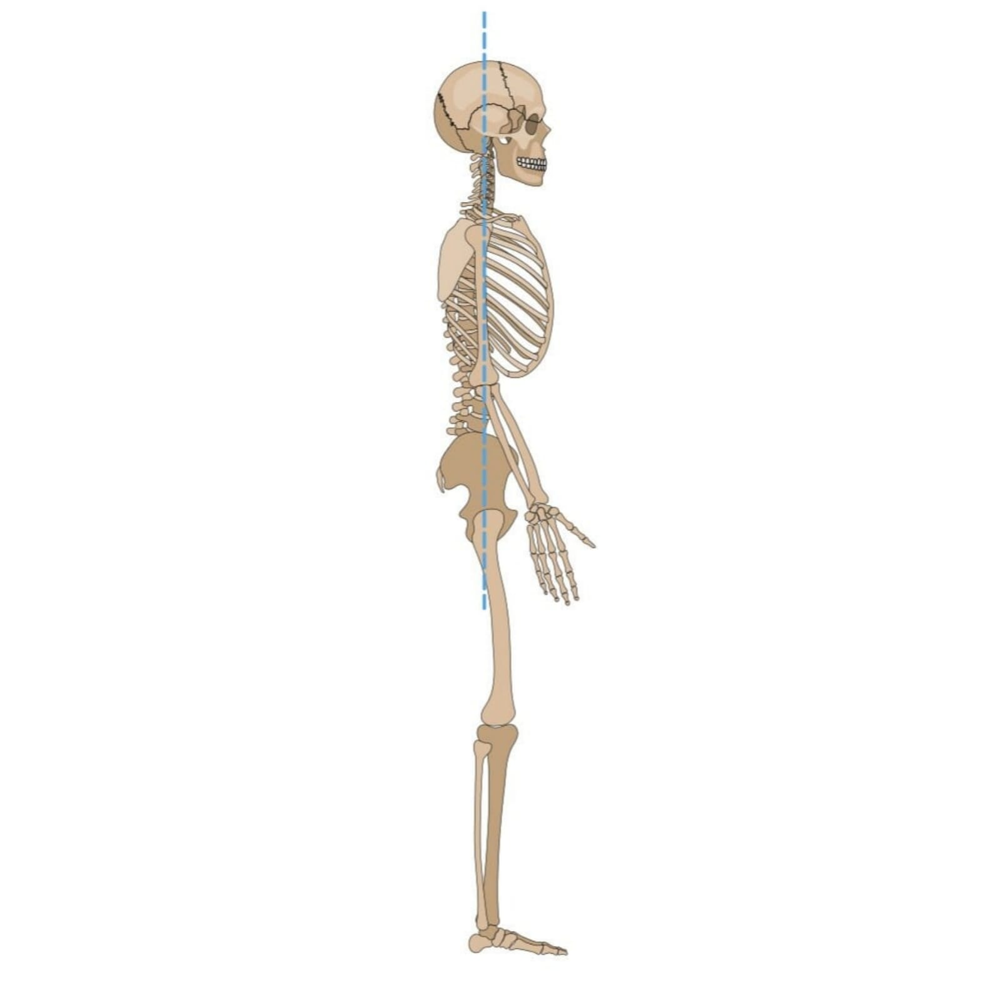

NASA is particularly interested in investigating how the body reacts to long-duration spaceflight as the agency plans for extended missions on the Moon and Mars. These can be summarized with the acronym RIDGE, short for Space Radiation, Isolation and Confinement, Distance from Earth, Gravity fields, and Hostile/Closed Environments.
Three major sources contribute to the space radiation environment: particles trapped in Earth’s magnetic field, solar energetic particles from the Sun, and galactic cosmic rays. A big challenge in reducing the risks of radiation exposure is that some space radiation particles (especially galactic cosmic rays). Increased risk of cancer and degenerative diseases, such as heart disease and cataracts, have been observed in human populations exposed to radiation on Earth. Health risks for astronauts from radiation exposure in space are mainly driven by long-term impacts. Additionally, animal, and cellular research indicate that the type of radiation in the space environment has a larger impact on health outcomes compared to the radiation experienced on Earth.
Ensuring astronauts get quality sleep is also important; otherwise, their internal biological clocks, or circadian rhythm, might be altered by factors like different dark and light cycles, a small and noisy environment, the stress of prolonged isolation and confinement, and a 37-minute extended day on Mars. It is important to prepare for the fatigue astronauts may experience during spaceflight, given that there will be times with heavy workloads and shifting schedules. To prevent crew boredom, NASA considers the kinds of activities in which the astronauts will participate during a multi-year-round trip to Mars.
The types of food and medicine to be packed for a multi-year trip without access to a grocery store or pharmacy are also important to consider. Unlike space station crews, which regularly receive supplies from cargo flights from Earth, astronauts going to Mars will have to bring all the food, equipment, and medical supplies they need.
NASA has learned that without Earth’s gravity affecting the human body, weight-bearing bones lose on average 1% to 1.5% of mineral density per month during spaceflight. After returning to Earth, bone loss might not be completely corrected by rehabilitation; however, their risk for fracture is not higher. Without the proper diet and exercise routine, astronauts also lose muscle mass in microgravity faster than they would on Earth. Moreover, the fluids in the body shift upward to the head in microgravity, which may put pressure on the eyes and cause vision problems. If preventive or countermeasures are not implemented, crews may experience an increased risk of developing kidney stones due to dehydration and increased excretion of calcium from their bones.
NASA has learned that the ecosystem inside the spacecraft plays a big role in everyday astronaut life in space. Microbes can change characteristics in space, and micro-organisms that naturally live on the human body are transferred more easily from person to person in closed habitats, such as the space station. Stress hormone levels are elevated, and the immune system is altered, which could lead to increased susceptibility to allergies or other illnesses. Blood and saliva samples are analyzed to identify changes in the immune system and the reactivation of latent viruses during spaceflight. NASA uses advanced molecular techniques to evaluate the risk of microbes that may cause illness for crew members. Various parts of the body and the space station are swabbed regularly for analysis of the microbial population that inhabits the environment. Crews change out air filters, clean surfaces, and treat the water to prevent illnesses that may result from the accumulation of contaminants.
Can fish swim in microgravity? Do bees make honey in space? Can ant farms exist on the Space Station? These are just a few of the questions scientists hope to answer by taking animals into space. Researchers are interested in how the body responds to microgravity. While working on the Space Shuttle or International Space Station (ISS), many studies may be performed on people, but many others interfere with everyday operations; here is where the animals come into play. Scientists may not be very interested in how a rat responds to space circumstances, but animal data may be used to human models to assist prevent or treat physical problems that humans now experience.
Only when essential, animals are sent into space to assist in scientific studies. Researchers prefer to conduct studies using computer models or by involving astronauts directly. However, only animals will be used in some trials. Sometimes conditions must be closely managed, such as a diet. Human astronauts are often unwilling to agree to consume the same amount and type of food, therefore this experiment would be difficult for them. Animals, on the other hand, are constantly fed under close supervision.
Nobody knew if people could survive a voyage away from Earth in the early days of space research, so utilizing animals was the best method to find out. Albert, a rhesus macaque monkey, flew inside a V2 rocket in 1948. Russians launched a dog named Laika into space in 1957. Both flights demonstrated that people could withstand weightlessness as well as the consequences of extreme gravitational forces. The number of animals transported into space reduced after numerous additional trips. The majority of investigations could be carried out in space without the use of animals.
However, in 1973, the Skylab space experiment investigated circadian rhythm. Several mice were utilized in this experiment. The Space Shuttle program grew from there, including a more acceptable environment for animals.
Because of the housing requirements and practicality of space flight, the lowest form of life is most suited for space travel. Snail and fish experiment results are frequently applicable to human conditions: inner ear checks may be performed on a snail rather than a highly evolved mammal, and genetic research can be conducted on fish. While there is no one-to-one transfer, the commonalities are sufficient to learn the required information.
Bringing animals into space necessitates concerns. What would be required if a bunch of laboratory mice flew onboard the next Space Shuttle mission? Traditional aquarium-style cages don't have enough traction for mice to wander about in; instead, space mice have wire mesh cages that allow their toes to grip a rougher surface. Wood chips could not be utilized as bedding because they would not adhere to the surface. Gravity-feed water bottles would not work; instead, pressurized water containers are required. Because bowls of dry food are impractical, compressed food bars are offered. A specific waste containment system has been designed to keep everything in its place when cleaning the cages.
Do the animals like living in microgravity? Does floating instead of walking confuse them? "Amazingly, they adapt very quickly," says Laura Lewis, a member of NASA Ames Institutional Animal Care and Use Committee. "Within 5 minutes, mice are floating in their living spaces, grooming themselves, and eating, just as they would on Earth."
"Good science sets up hypotheses for an experiment, but sometimes the result is not what you expect," says Lewis. "While we test our projects on the ground and in simulators, once we get into space, we are sometimes surprised by what we learn."
What are some of the effects of animals in space? Because there is no up or down to guide them, fish and tadpoles swim in loops rather than straight lines, according to Lewis. When a light shines, the fish utilise it as a guiding source and swim towards it. Baby animals struggle in space because they generally cluster for warmth—and it's difficult to huddle when bodies drift and float. Babies find it challenging to breastfeed when they can't find their mother's nipple.
Animals that travel in space are cared for ethically and humanely, Lewis says. "The Institutional Animal Care and Use Community looks at the most humane alternatives for taking animals into space," she says. "Regulations for animal research are more intense than for using people in research because people can give consent. Animals can't object, so people need to work on their behalf. Animal housing rules are more extensive than the requirements for human children day care centers. NASA facilities that house animals for research are accredited by an organization that requires proof that animals are cared for in a facility that meets those standards." The United States Department of Agriculture Animal Welfare Act and the Public Health Services Policy Act protect research animals and set minimum standards.
"Animals don't go into space very often," Lewis says. "There are so few flight opportunities for a mission to include animals, so the project has to be pretty important to earn a spot on any trip into space. When animals do make the trip, their welfare is a key concern."
Human Skeleton:
Human bones are stronger than concrete.

Brain dolphin:
Dolphins alternate which half of the brain is sleeping periodically so they can get the rest they need without ever losing consciousness.
Alligator skin:
The thickness of the skin of an alligator can save him from cosmic rays and its skin is one of the most tough and dense materials in animals.
Alligator eyes:
They glow red—one good way to locate alligators in space.
Aligator tail:
To control his direction and movement.
To download the application, scan the following QR Code: